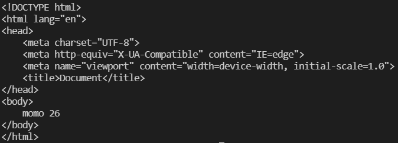

日常的学习笔记，包括 ES6、Promise、Node.js、Webpack、http 原理、Vue全家桶，后续可能还会继续更新 Typescript、Vue3 和 常见的面试题 等等。
模板引擎
首先我们要先清楚，什么是 模板引擎 ？
模板引擎的诞生是为了将显示与数据分离。
模板技术多种多样，但其本质是将模板文件和数据通过模板引擎生成最终的HTML代码。
这里我们以最常见的模板引擎 EJS 举例说明。
EJS的使用
本篇文章我们不讲使用，主要是为了手写实现 EJS 的原理。
参考官网 EJS|嵌入式JavaScript模板引擎
首先我们先对EJS进行安装。
1 | // 利用NPM安装 |
在目录中，我们可以创建一个 template.html 的html文件。
1 | <body> |
添加两个标签用来做渲染。
再创建一个 ejs.js 的文件。
1 | const ejs = require('ejs'); // 导入ejs |
打印后发现，name 和 age 已经被渲染在了视图（字符串）上。

通过上述的打印结果，我们便可以尝试手写实现 ejs类。
EJS的实现原理
首先，先根据需要的参数内容，实现一个类（函数），里面包含一个 readerFile 方法
1 | let ejs = { |
我们先来实现一套简单的 renderFile 方法。
简单情况
先做一套最简单的实现，熟悉一下原理和逻辑。
来看一下完整代码。
1 | const fs = require("fs"); |
因为 readerFile 需要对文件进行读写，所以我们还需要封装一个可以进行读写的 read 方法。
根据我之前文章中的写法，我们可以利用 promisify 对读写方法进行封装。
1 | const fs = require('fs'); |
这样我们就得到了一个可以进行异步读写的 read 函数。
随后我们将 read 函数放到我们上面的 readerFile 方法中，我们现在就得到了一个可以读取html模板的方法。
1 | let ejs = { |
随后我们就可以对方法进行进一步处理了。
下一步我们就需要对 <%= ... %> 进行替换处理了。
参考文献 正则表达式 | 菜鸟教程
使用 正则表达式 对匹配的内容进行替换处理即可。
1 | let ejs = { |
这样我们就实现了一套最简单的 ejs.renderFile 方法。
复杂情况
实现了上面的简单情况，我们再来实现一种复杂情况。
还是上面那个例子，假设我们在 html 模板中去渲染 数组。
1 | <!-- html --> |
js 中也许要进行对应的修改。
1 | // js |
我们上面的简单情况的实现方式就无法满足这个需求，所以我们需要一套处理复杂情况的实现方式。
我们需要对上面的 简单情况 的实现方式代码进行一些 修改 。
先来看一下完整的实现代码。
1 | const fs = require("fs"); |
在实现代码之前，我们需要先对其实现原理进行一些分析。
字符串拼接
webpack.loader的底层实现其实就是 字符串拼接 。我们可以利用这种思路，来对我们需要重新拼接的模板进行拆分并拼接。我们先来看一下完整的
html文件是什么样的。1
2
3
4
5
6
7
8
9
10
11
12
13
14
15
16
<html lang="en">
<head>
<meta charset="UTF-8">
<meta http-equiv="X-UA-Compatible" content="IE=edge">
<meta name="viewport" content="width=device-width, initial-scale=1.0">
<title>Document</title>
</head>
<body>
<%arr.forEach((item)=>{%>
<!-- <li><%=item%></li> -->
<!-- 上面是原本需要输出的结果，这里先不考虑item -->
<li>1</li>
<%})%>
</body>
</html>在我们读取文件时，我们其实读取到的是一串 字符串 。
所以我们最终 需要输出的模板 ，其实是下面这个样子的。
1
2
3
4
5
6
7
8
9
10
11
12
13
14
15
16
17
18
19let str = "";
// 截取第一个<% 之前的代码
str += `<!DOCTYPE html>
<html lang="en">
<head>
<meta charset="UTF-8">
<meta http-equiv="X-UA-Compatible" content="IE=edge">
<meta name="viewport" content="width=device-width, initial-scale=1.0">
<title>Document</title>
</head>
<body>`
// 拼接 forEach 的结果
arr.forEach((item)=>{
str += `<li>1</li>`
})
// 拼接 末尾
str += `
</body>
</html>`要将代码拼接成上述效果， 实现原理的代码 就变成了这样。
1
2
3
4
5
6
7
8
9
10
11
12// ...
let ejs = {
async renderFile(filename, options) {
let content = await read(filename, "utf-8");
let head = 'let str = "";\nstr +=`';
let body = content = content.replace(/<%(.+?)%>/g, function () {
return '`\n' + arguments[1] + '\nstr+=`'
});
let foot = '`'
return head + body + foot;
},
};with处理循环参考文献 with - JavaScript | MDN
为什么要用
with？ 因为with可以使当前代码运行在指定的作用域内。所以 最终模板 就会被渲染成这样。
1
2
3
4
5
6
7
8
9
10
11
12
13
14
15
16
17
18
19let str = "";
// obj就是传入的参数 options，也就是 {arr:[1,2,3]}
with(obj){
str += `<!DOCTYPE html>
<html lang="en">
<head>
<meta charset="UTF-8">
<meta http-equiv="X-UA-Compatible" content="IE=edge">
<meta name="viewport" content="width=device-width, initial-scale=1.0">
<title>Document</title>
</head>
<body>`
arr.forEach((item)=>{
str += `<li>1</li>`
})
str += `
</body>
</html>`
}为什么会有一个
obj？ 下一步分析中会详细说明。我们再对 实现代码 进行一些修改。
1
2
3
4
5
6
7// ...
let head = 'let str = "";\nwith(obj){\nstr +=`';
let body = content = content.replace(/<%(.+?)%>/g, function () {
return '`\n' + arguments[1] + '\nstr+=`'
});
let foot = '`}'
// ...其实就是在需要拼接的代码里面，加上
with就可以了。new Function创建函数模板在上一步中，我们出现了一个不知名参数
obj。我在注释中解释为，传入的参数 。
通过一个函数，将参数传入 模板中，并执行最终的结果。
1
2
3
4
5
6
7
8
9
10
11
12
13
14
15
16
17
18
19
20
21
22
23
24
25function fn(obj) {
let str = "";
with (obj) {
str += `<!DOCTYPE html>
<html lang="en">
<head>
<meta charset="UTF-8">
<meta http-equiv="X-UA-Compatible" content="IE=edge">
<meta name="viewport" content="width=device-width, initial-scale=1.0">
<title>Document</title>
</head>
<body>
`;
arr.forEach((item) => {
str += `
<li>1</li>
`;
});
str += `
</body>
</html>`;
}
return str;
}
fn({ arr: [1, 2, 3] });其实就是在最外层套了一个
function函数，里面有传入的参数 {arr: [1, 2, 3]}。这样，我们在 实现代码 中，便可以使用 new Function 来实现此思路。
1
2
3
4
5// ...
let foot = '`} return str'
let fn = new Function('obj', head + body + foot)
return fn(options);
// ...obj作为参数，拼接的字符串 作为函数执行。这时我们可以发现，结果变成了我们想要的样子。
现在我们来进行最后一步，处理循环的结果。
处理循环结果
我们先将
html里面的注释去掉。1
2
3
4
5
6<body>
<%arr.forEach((item)=>{%>
<li><%=item%></li>
<!-- <li>1</li> -->
<%})%>
</body>通过上面分析中的函数模板，要输出
item，其实只要使用 模板字符串${}即可。所以我们可以对上面的模板添加一个替换条件即可。
1
2
3
4
5// ...
content = content.replace(/<%=(.+?)%>/g, function () {
return '${' + arguments[1] + '}';
})
// ...这样我们就实现了
ejs.renderFile方法的 复杂情况。
在实际工作和面试中，很少会手写这种形式的代码。
我们只需要了解其实现原理即可。
本篇文章由莫小尚创作，文章中如有任何问题和纰漏，欢迎您的指正与交流。
您也可以关注我的 个人站点、博客园 和 掘金，我会在文章产出后同步上传到这些平台上。
最后感谢您的支持！